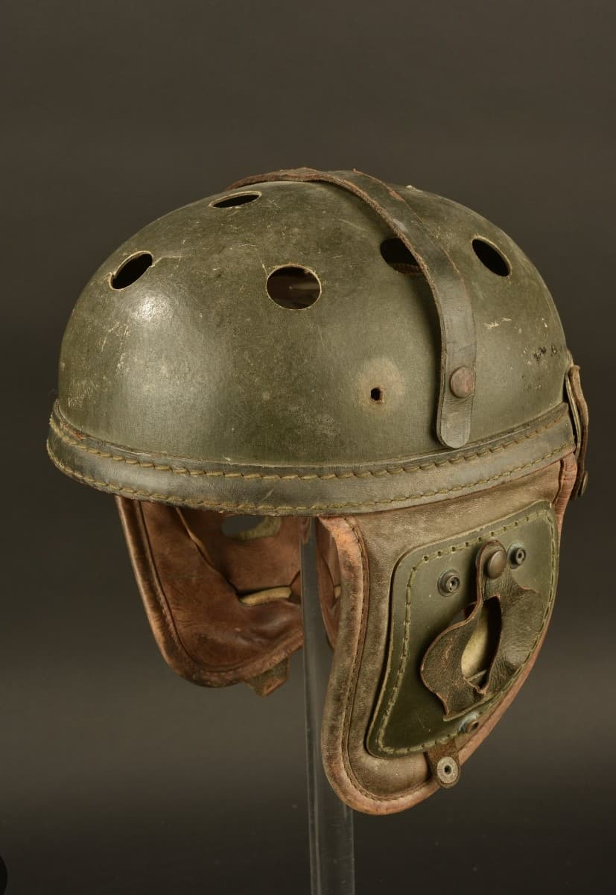
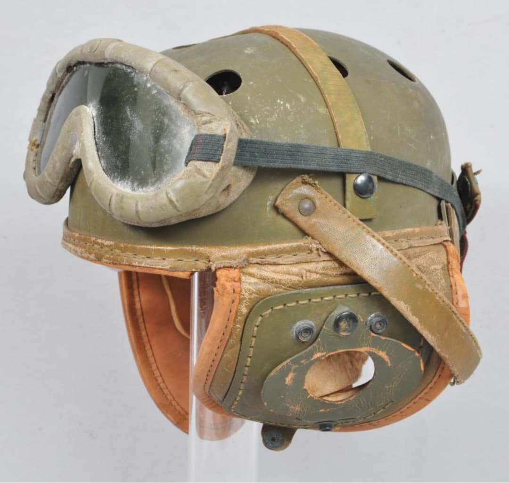

Le casque US de tankiste, appelé Tank Crew Helmet, est conçu pour protéger les équipages de chars américains durant la Seconde Guerre mondiale. Il doit résister aux chocs violents à l’intérieur du blindé, aux vibrations du moteur et aux impacts contre la coque.
Il est également pensé pour permettre l’utilisation d’un système radio, indispensable pour la coordination des équipages dans les chars Sherman, Stuart et autres blindés américains.

Les lunettes visibles sur la seconde photo sont un élément essentiel du matériel du tankiste. Elles protègent les yeux des projections métalliques, de la poussière, des éclats et des gaz irritants. Lorsqu’un tankiste observe le terrain depuis la trappe, elles sont indispensables pour conserver une visibilité optimale malgré le vent, la fumée et les débris.

Utilisé sur tous les fronts, ce casque accompagne les équipages américains dans les combats mécanisés en Afrique du Nord, en Italie, en Normandie et dans les Ardennes.
Il est devenu un symbole des tankistes US de la Seconde Guerre mondiale, reconnaissable par sa forme particulière et ses renforts latéraux.